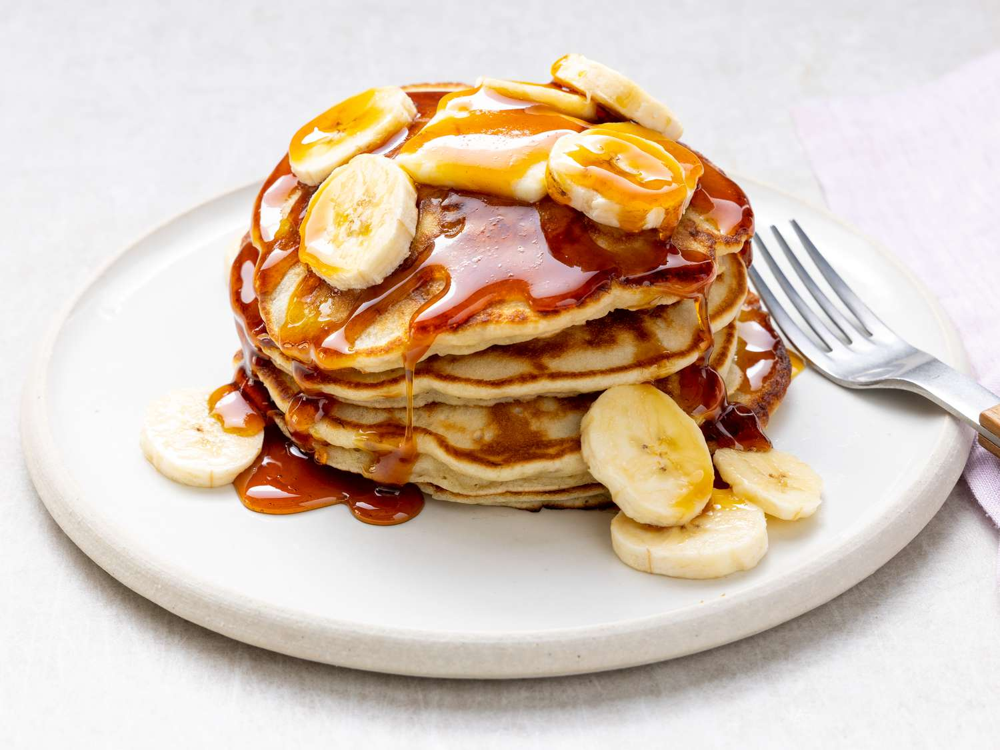

December is one of the busiest months of the year: there are potlucks to host, ham to roast and pavloas to be made. But in the meantime, we also have have 3 great recipes to help get a quick meal on the table admist all the festivities.
 Banana PancakesCrowd pleasing banana pancakes made from scratch that are ready in minutes
Spinach Artichoke DipA cheesy and fragrant dip guaranteed to win the crowd
Cranberry Orange CookiesTart and delicious cookies that are perfect for the festive holidays